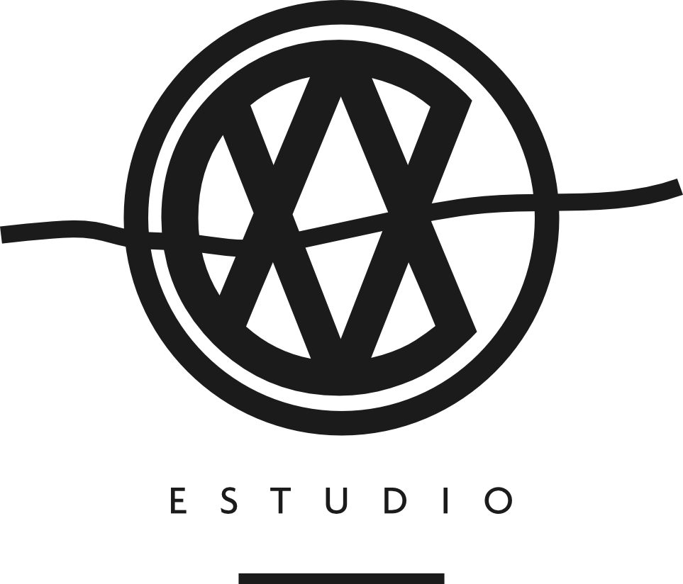

Construimos y evolucionamos marcas desde la estrategia hasta su expresión visual, creando sistemas claros, distintivos y coherentes capaces de acompañar al negocio en el tiempo.
Una empresa puede tener experiencia, un gran producto y una propuesta sólida, pero si su marca no logra transmitir ese valor, parte de esa ventaja se pierde antes de que el cliente pueda experimentarla. La forma en que una empresa se presenta influye en cómo es entendida, recordada y comparada.
Tu negocio evolucionó. Tu marca no lo refleja.
Sabes que haces algo bien. No siempre es fácil percibir por qué.
La calidad está. La diferenciación no se reconoce.
La empresa genera confianza cuando la conocen. La marca debería empezar a construirla antes.
El valor existe.
Nuestro trabajo es ayudar a hacerlo visible.
Es definir qué queremos representar, por qué alguien debería reconocernos y qué debe mantenerse coherente cada vez que la marca aparece. En CAVA partimos entendiendo el negocio, las audiencias, la competencia y el contexto. Desde ahí definimos una dirección y la convertimos en un sistema verbal y visual capaz de funcionar en el mundo real.
Primero definimos qué debe significar la marca.
Después decidimos cómo debe verse.
{{ pl.desc }}
Nuestra metodología conecta comprensión, estrategia, expresión y ejecución.
Cada empresa parte desde un lugar diferente. Antes de cambiar una marca, buscamos entender qué merece conservarse, qué necesita evolucionar y qué hace falta construir.
{{ en.desc }}
Cambiar por cambiar no construye valor. Evolucionar con una dirección sí.
Por eso construimos sistemas pensados para seguir funcionando después del lanzamiento: en contenido, presentaciones, packaging, web, campañas y cada nuevo punto de contacto.
No buscamos crear una identidad que dependa permanentemente de quien la diseñó. Buscamos construir criterios, herramientas y sistemas que permitan que la marca mantenga una dirección común a medida que crece.
Conoce nuestro soporte continuo →{{ f.a }}

Conversemos sobre dónde estás, qué está cambiando y qué necesita tu marca para acompañar la siguiente etapa.
Hablemos de tu marca →